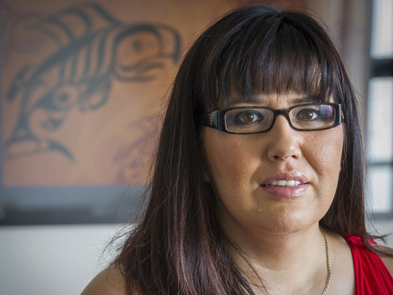
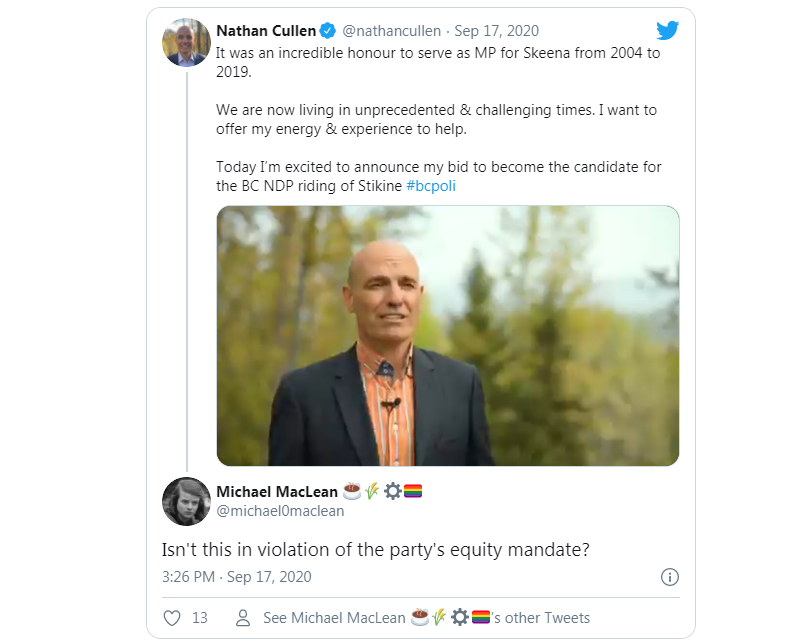
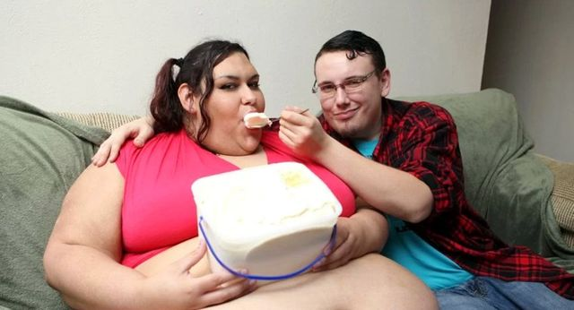

NDP "Wahmen" Only Seats
Vancouver Sun:
TDC_ARTICLE_START
The NDP’s announcement that former MP Nathan Cullen is a candidate in the B.C. election has stirred controversy and put the nomination processes used by all the parties in the spotlight.
Annita McPhee, the former president of the central government for the Tahltan Nation, said the party broke its own rules when it selected Cullen after she submitted a nomination package last Friday.
The NDP has a policy that stipulates a woman or a member of equity-seeking group must replace retiring male members of the legislature. McPhee hoped to replace Forests Minister Doug Donaldson as the candidate in Stikine.
But B.C. NDP president Craig Keating said McPhee’s application contained invalid signatures from people supporting her nomination. The party tried to work with her to solve the problem, but it was too late, he said in a statement.
“There was simply not enough time to process the application,” said Keating.
TDC_ARTICLE_STOP

Alrighty, this is why I wrote this article, not the particular brown bitch in question, but rather this "only brown wahmen pls," NDP policy. Is there a way to get the details of this NDP policy? Turns out yes, from another VanSun article:
TDC_ARTICLE_START
Annita McPhee has thrown her name into the running for the nomination for the provincial riding of Stikine bolstered by the NDP’s own mandate that should make her a shoo-in for the nomination.
The B.C. NDP’s Equity Mandate states that when a male MLA does not seek re-election — as current MLA Doug Donaldson has announced — the party requires that the next nominee be a member of an equity-seeking group, such as an Indigenous person or a woman.
McPhee stated in a release on Saturday that as late as Sept. 17, no members of an equity-seeking group had applied for the nomination.
Then Nathan Cullen, former NDP Member of Parliament for Stikine-Bulkley Valley, seemingly announced on Twitter later that same day at 3 p.m. that he was putting his name forward.
McPhee “is asking that the BC NDP vet her as a potential candidate formally,” the release states. “The Stikine riding includes the homelands of the Tahltan people. Stikine also has the second highest percentage of Indigenous peoples of all provincial ridings.”
McPhee — a prominent Indigenous advocate who served three terms as president of the Tahltan central government —has the support of several Indigenous chiefs from the riding, including Chief Glen Williams from Gitanyow; Chief Chastity Daniels from Gitwangak; Chief Marie Quock from Iskut; Chief Rick McLean from Tahltan, and Hereditary Chief Yobx from Gitsegukla.

TDC_ARTICLE_STOP
Welp, there’s a lot to unpack here. First of all, I hate to do the obvious, but while they are too cowardly to say this, 100% this is racial discrimination against whites. Oh wait, apparently they explicitly say “an equity mandate remains in place for ridings in which a male incumbent retires, meaning the replacement candidate for Simpson must be a woman or from a racial minority group, First Nation or LGBTQS+.”
As always, I become more confused after the explanation. What the fuck is LGBTQS+? Does the plus signify “there’s more weird shit that we’re trying to mainstream,” or is the plus something itself? Like, perhaps there’s this weird sexual fetish where you are into plus sized wahmen, and this qualifies you for NDP candidate membership. Who knows?
Hot!
More importantly, I’m actually not as outraged as you might think, because politicians are nothing more than shills for their donors. It doesn’t matter who’s standing behind the counter at the bank, only who runs the head office, and it doesn’t matter who these politicians are, they are selected for obedience.
Still, it is nice to see these people go mask off, and as always, getting this written down is great, as it is something we need to be referring back to when they talk about “bigotry,” and “exclusion,” since they literally have a political party that racially discriminates against whites and sexually discriminates against men. Also, discriminates based on not having a weird sexual fetish.